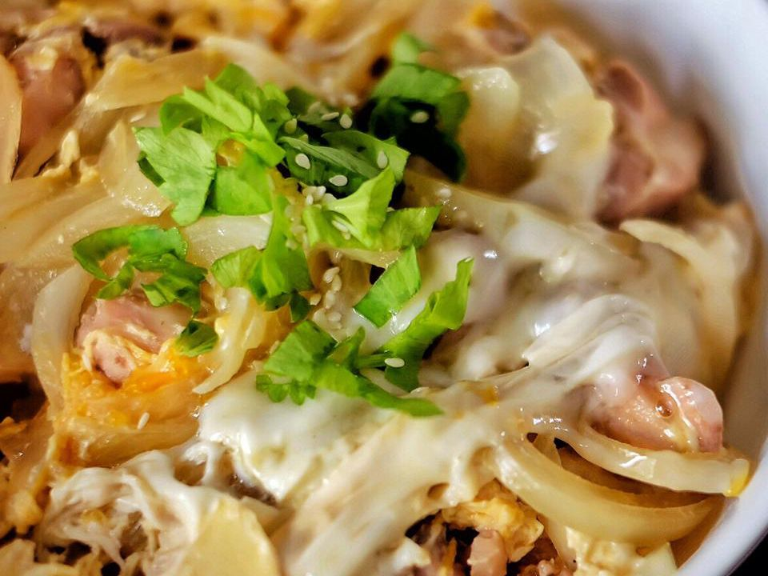

Oyakodon

Description
Oyakodon is a delicious traditional Japanese meal consisting of chicken sautéed and then cooked in a Japanese broth, and then finished with egg and served over rice. It's really easy, filling, and delicious.
Oyakodon, literally "parent-and-child donburi", is a donburi, or Japanese rice bowl dish, in which chicken, egg, sliced scallion (or sometimes regular onions), and other ingredients are all simmered together in a kind of soup that is made with soy sauce and stock, and then served on top of a large bowl of rice.
Ingredients
- 1 tablespoon olive oil
- 4 skinless, boneless chicken thighs, cut into small pieces
- 1 onion, cut in half and sliced
- 2 cups dashi stock, made with dashi powder
- 1/4 cup soy sauce
- 3 tablespoons mirin (Japanese rice wine)
- 3 tablespoons brown sugar
- 4 large eggs
- 4 cups hot cooked white rice
Steps
- Heat oil in a large skillet over medium heat. Add chicken and cook until beginning to brown, about 5 minutes. Add onion; cook and stir until onion is translucent, about 5 minutes.
- Pour in stock, then whisk in soy sauce, mirin, and brown sugar; stir until sugar dissolves. Bring to a boil, then lower heat and simmer until slightly reduced, about 10 minutes.
- Whisk eggs in a bowl until well-beaten, then pour into the hot stock mixture. Cover the skillet, reduce the heat, and steam until egg is cooked, about 5 minutes. Remove from the heat.
- Divide rice among 4 deep soup bowls and top with equal amounts of the soup mixture.